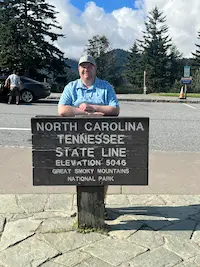

Derek Peterson | WDD 130
Hello! I am Derek Peterson and I enjoy having aquariums and spending time with my wife! I am currently getting together a 75 gallon tank that I should have up and running by thanksgiving. I hopefully will be able to show a picture of it on here as soon as I can. I currently have a 10 gallon fish tank with a blue dwarf gourami and some rasboras in it. It has been a fun hobby to get into that has kept me learing and growing.
My wife and I love to travel and see new places. My image shows our most recent trip to Great Smoky Mountains National Park over labor day weekend. Some of the funnest trips we have been on were going to San Fransisco, Washington D.C., Universal Studios in Orlando, Florida, and Cancun, Mexico. We always make sure to make time to spend a couple quality weeks with each other. Its important to always make time for the ones you love and cherish and that is why we travel. It is to make time for the memories.